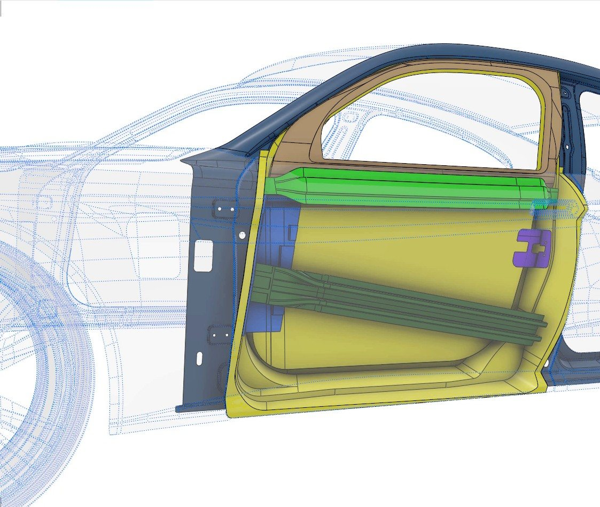
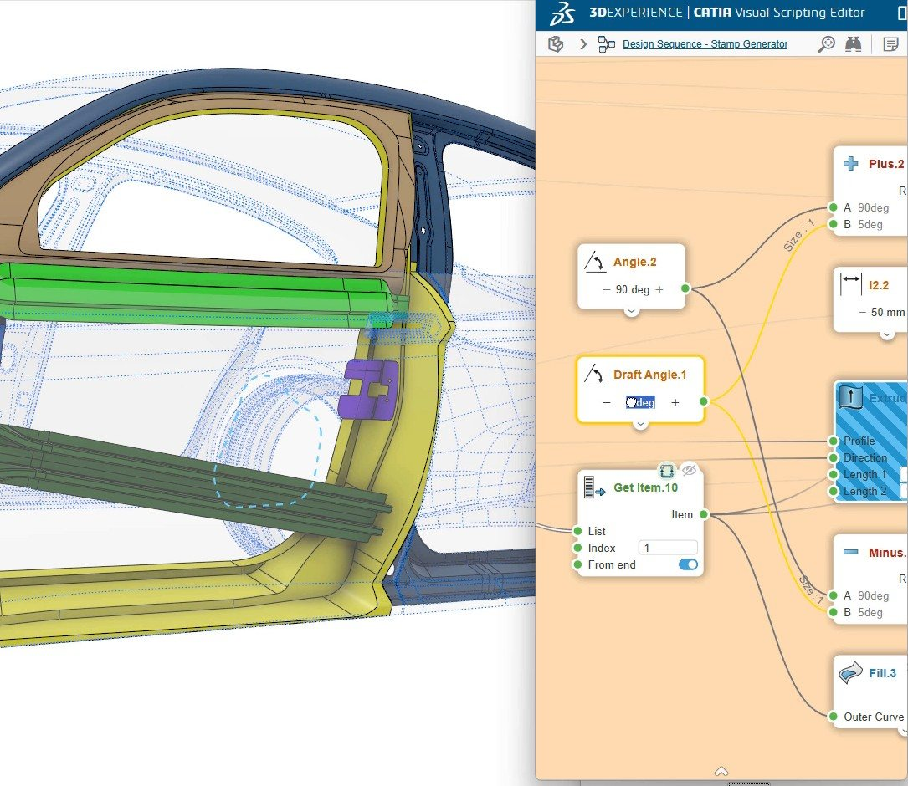

← All projects
Dassault Systèmes · Generative & modular design · 2024
Generative door
A complete door inner structure generated from the car body. Each reinforcement is a module that reads the body and styling inputs, so the same door rebuilds on a van or on a coupé.
- Tools
- CATIA GSD+, modules, Visual Scripting
- Year
- 2024
One door, two cars: the modules built on the van (left) are rebuilt on the coupé (right), then both bodies carry the same door.
Modules
- Door inner panel and window frame
- Intrusion beam and lateral reinforcement
- Beltline inner reinforcement and lock reinforcement
- Band reinforcement, with raw, omega, final and thickness alternatives
What it shows
- Module Structure Manager: every module and link (inputs, outputs) visible and editable as a graph.
- One door definition reused on two bodies, a van and a coupé, without remodeling.
- Alternatives swapped in place, without touching the rest of the door.
- Stamped features driven by a Visual Scripting generator (draft angle, dimensions).
Gallery



